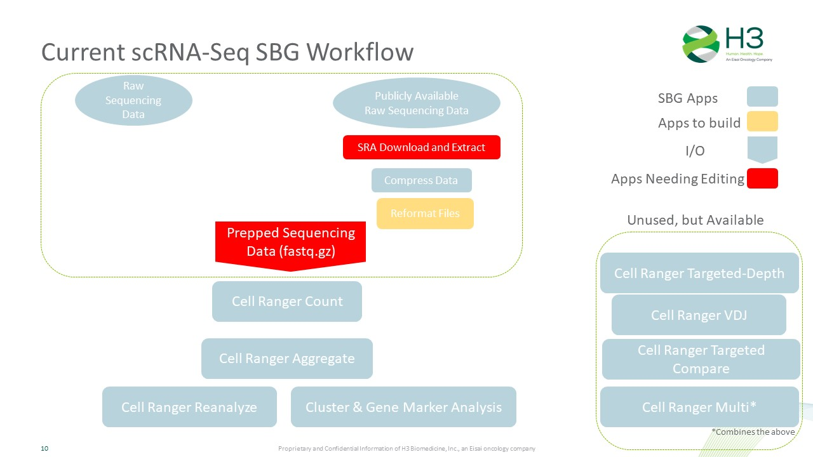

By: Nathan T. Johnson
Date: 2021.12.06
Our computational infastructure vendor Seven Bridges has scRNA-Seq infastructure to allow us to run through
Extensive Quality Control and pre-processing Cluster the single cells Identify single cell type Explore the range of single cell states Differential analysis between clusters, types, states Compare the above between biological conditions
Identify relevant tools Data Science Team Biologists (interactive visualization) Download multiple datasets Publicly available 10x Human PMBC example dataset Dataset mixture of mouse and human Attempt to analyze datasets throughout entire pipeline Primarily used 10x Cell Ranger Visualization Tools Bioturing (Paid, currently limited licenses) Loupe (Free 10x Visualization Tool)
Brainstorming on H3 Fully Desired Deliverables: QC assessment Dimension Reduction Normalization Cluster Analysis Cell Identity Cell State Comparisons of the above between biological states Dashboard & Report representation A Loupe data file for on your laptop visualization Trajectory Analysis Analyze publicly available scRNA-Seq data Data output for extended analysis

This is a sub paragraph, formatted in heading 3 style
There are two type of challenges. Those related to SBG and those related to how to run Cell Ranger.
What criteria are necessary to use scRNA-Seq apps for H3 analysis purporse
Can not use publicly available scRNA-Seq Data with SBG scRNA-Seq Data